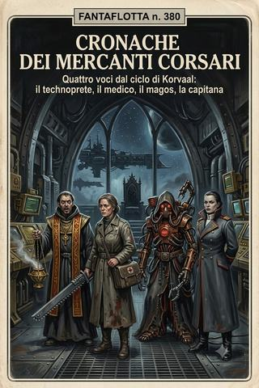

Cronache dei mercanti corsari · racconto 1 di 5
La regina di Morros
Un mondo-prigione, cinque carceri e mura che zittiscono il warp; una veggente che chiude un cancello sull’inferno e si ritrova santa e regina di ciò che ha salvato consegnandolo.
- ≈ 55 min di lettura
- dalle partite a Rogue Trader
- il volume in EPUB, 2,4 MB
Deposizione di sorella Lucia Extenbarria, ospitaliera e veggente sanzionata, perché sotto l’icona resti almeno una voce.
Anno 38012 dell’Era Imperiale.
Prologo — Ciò che vidi e non seppi impedire
Mi chiamano santa. Su una parete alta venti metri, all’ingresso di una città che un tempo fu una prigione, il mio volto è intagliato nel legno con gli occhi rivolti al cielo e le mani aperte in benedizione, e ogni sera, sotto quel volto che non è il mio, uomini e donne inginocchiati pronunciano il mio nome dove un tempo avrebbero pronunciato quello dell’Imperatore. Mi chiamano regina. Ho rifiutato il titolo, e me lo hanno dato ugualmente, come si dà una veste a chi ha freddo e non la chiede: per il proprio bisogno, non per la sua volontà.
Non sono né l’una né l’altra cosa. Sono una donna che vede, e questa deposizione la scrivo perché almeno una riga vera sopravviva sotto le molte false, e perché — se mai qualcuno la leggerà, cosa di cui dubito, ché i santi non hanno lettori, hanno adoratori — sappia come si diventa l’idolo di un popolo senza mai crederci un istante.
Devo cominciare da ciò che sono, perché tutto il resto ne discende. Porto sulla fronte, sotto la benda che gli ignoranti scambiano per umiltà, il marchio di chi è stato sanzionato: la cauterizzazione con cui l’Imperium licenzia i propri veggenti, timbrando come merce sicura ciò che altrove brucerebbe. Sono uno psyker legale. Vedo. Vedo il filo delle cose prima che si tenda, la piega del tempo prima che si compia, la mano che si alza prima che colpisca. È un dono, dicono i miei superiori, e lo dicono come si dice di una malattia rara di cui l’ospedale mena vanto: con orgoglio e con la porta socchiusa.
Ma c’è una cosa che i miei superiori non mi hanno mai detto, e che ho imparato da sola, un mondo alla volta, una morte alla volta: che vedere e potere non sono la stessa cosa. Che il terzo occhio vede tutto, tranne il modo di impedirlo. Ho visto arrivare gli uomini scesi dal cielo prima che i loro velivoli fendessero le nubi di Morros. Ho visto cosa avrebbero fatto di me. Ho visto la parete di legno col mio volto, ho visto il ginocchio dei fedeli, ho visto il cappuccio calarmi sopra la testa mentre ancora mi credevo libera. Vidi tutto questo, e vedere non bastò. Aprii il cancello lo stesso. Perché ciò che veniva dietro di me era peggiore di ciò che veniva davanti, e un veggente non sceglie tra il bene e il male — quello lo scelgono i ciechi, che hanno la fortuna di non vedere i costi. Un veggente sceglie tra due prezzi, e paga.
Questa è la storia di come salvai un mondo consegnandolo, e di come, salvandolo, mi vendetti. Non troverete un’eroina. Troverete una donna che ha visto ogni gradino della propria discesa illuminato in anticipo, e li ha scesi tutti, uno dopo l’altro, con la calma di chi ha già letto la fine e sa che discutere col testo non serve.
Comincio dal naufragio. È lì che l’Imperatore, o ciò che ne fa le veci, mi condusse dentro la gabbia che imparai ad amare.
I — Il naufragio e le mura che tacciono
Vidi la nave spezzarsi tre giorni prima che si spezzasse. Lo dissi al capitano. Mi fece legare alla cuccetta per isteria. Aveva ragione lui a non credermi: vedere non è provare.
Ero passeggera di una nave-ospedale in transito, e transitare significava tentare ciò che nessuno tentava più: il Vortice Ululante, la tempesta warp che da mezzo secolo isola il sistema di Morros dal resto del creato. Non so perché la mia nave ci provasse. So che non ci riuscì. Il Vortice ci prese come un bambino prende una falena, senza malizia e senza scampo, e ci sbriciolò lo scafo attorno alle preghiere. Gran parte dell’equipaggio finì nelle scialuppe, e le scialuppe finirono nell’immaterium, e nell’immaterium, lo dico a chi non c’è mai stato senza le protezioni engrammiche di una camera consacrata, non finiscono anime: finiscono pasti. Li sentii spegnersi uno a uno, con quel terzo occhio che non si chiude mai del tutto, mentre venivano contati e riscossi da ciò che abita là fuori. Vidi le loro morti mentre accadevano, in diretta, a distanza, senza poter fare nulla. Fu il mio primo apprendistato alla mia vera natura. Non l’ultimo.
Alcuni di noi — pochi, e non per merito, ché il merito nell’immaterium non è moneta corrente — emersero naturalmente nel sistema di Morros, come sughero che risale. Altri giorni di fame e di delirio, e infine il pianeta: un mondo simile alla vecchia Terra dei catechismi, più duro, coperto di nubi in eccesso, e cinto — questo lo capimmo scendendo — da titaniche mura di roccemento che dividevano il suolo in cinque grandi recinti. Cinque carceri, uno per colpa: i ladri, gli eretici, gli assassini, i ribelli, i maniaci. Un mondo-prigione, abbandonato dai suoi carcerieri mezzo secolo prima, lasciato a fermentare nel proprio abbandono.
Precipitammo entro le mura del recinto dei ladri. Fu una fortuna che allora scambiai per grazia. Solo dopo compresi che nessuna grazia mi aveva salvata: mi aveva salvata la stessa cosa che, alla fine, mi avrebbe incappucciata.
Perché la prima cosa che sentii, toccando quel suolo, fu il silenzio.
Non il silenzio dell’orecchio. Il silenzio dell’altro senso, quello che non si chiude. Per tutta la vita avevo portato dentro un ronzio: il warp che preme, la marea dell’immaterium che batte contro le pareti sottili di ogni psyker, il coro delle possibilità che nessuno di noi sa zittire. Dentro le mura di Morros, quel coro si spegneva. Non del tutto — non ero cieca —, ma attutito, strozzato, come se qualcosa nelle fondamenta stesse comprimesse il mondo di sotto e lo tenesse muto. La prima notte, dentro quelle mura, dormii. Dormii davvero, per la prima volta da quando ero bambina. E piansi, al risveglio, per la vergogna di aver amato tanto una gabbia.1
Non seppi allora — lo intuii solo, come si intuisce la forma di una stanza al buio — cosa fossero davvero quelle mura. Che non erano solo pietra. Che la loro geometria era antica di prima dell’uomo, e che la loro funzione vera non era tenere fuori i mostri, ma tenere muto il warp; rendere ciechi i veggenti; spegnere, con la sola forma delle pareti, ogni fiamma che vi dimorasse dentro. Vissi due anni dentro quel silenzio prima di comprenderlo, e quando lo compresi era troppo tardi per non amarlo. È così che funzionano le catene migliori: ti proteggono così bene, prima di stringersi, che quando si stringono le ringrazi.
Mi feci una vita. È ciò in cui sono brava — farmi una vita nelle rovine, curare, ascoltare, cucire relazioni come si cuce una veste da stracci. Presi una fattoria isolata a ridosso dei bastioni, a quindici chilometri da un borgo di mille anime. Curai le loro febbri. Insegnai a leggere al figlio del responsabile del villaggio, un ragazzino serio con le mani sempre nere. Non predicai — chi vuole durare, in un mondo che ha dimenticato l’Imperatore, non predica: aspetta. Nei carceri, i secoli d’abbandono avevano partorito nuove parole. «Ladro» era diventato un titolo d’onore; il re di quel recinto si faceva chiamare re dei ladri, e i suoi mille uomini di guardia, armati di polvere nera e di rare, temute reliquie «degli antichi venuti dal cielo», custodivano un ordine feudale sotto la minaccia perpetua dei titanotropi.
I titanotropi. Devo nominarli, ché sono il perno di tutto. Mostri alti come le mura, semi-antropomorfi, dalla carne che si rimargina più in fretta di quanto la si possa aprire. Vagavano oltre i bastioni, rari, quasi mai in branco. A memoria d’uomo ne avevano assaltato le mura una sola volta, e li avevano respinti al prezzo di molti morti e senza ucciderne nemmeno uno: le ferite si richiudevano, i colpi si consumavano contro barriere invisibili. Erano, per la gente di Morros, ciò che i demoni sono per noi: l’orrore da cui le mura proteggono, il motivo per cui si obbedisce al re. Nessuno sapeva da dove venissero. Io, che vedevo, a volte li sentivo nascere — un dolore lontano, come di parto, oltre le montagne, dalla parte dei maniaci. Non capivo. Vedere non è capire. È solo vedere.
Furono, quei due anni, i più felici della mia vita, e lo dico senza ironia, il che è la cosa più triste che io possa dire. Perché la felicità, per una veggente, non è avere ciò che si desidera: è vedere meno. Dentro le mura che tacevano, il coro del futuro si abbassava a un mormorio, e per la prima volta da bambina potei vivere un giorno alla volta, senza vedere i cento che seguivano. Curavo, insegnavo, coltivavo erbe. Il ragazzino dalle mani nere imparò a leggere in una stagione, e il giorno in cui compitò da solo la prima riga di un vecchio catechismo — non capiva le parole, l’Imperatore era per lui un dio del cielo come gli altri — provai una gioia così semplice che quasi non la riconobbi. Non sapevo, allora, che stavo insegnando a leggere all’unico suddito che avrei mai avuto per amore e non per bisogno. Lo insegnai per tenerezza. Divenne, senza che nessuno dei due lo volesse, il primo mattone del mio trono. È così che vanno le cose, per chi vede: anche gli affetti, a rileggerli dopo, si scoprono ingranaggi.
Passarono così quasi due anni. Poi, una notte, vidi le stelle spostarsi.
Non le stelle vere. Quelle del mio terzo occhio. Vidi, sopra la piega del tempo, tre velivoli fendere le nubi. Vidi uomini scendere: un prete dall’armatura lucente, un mercante dallo sguardo affamato, un contabile grigio, un guerriero d’acciaio, una donna col volto celato attorno a cui il warp si torceva come acqua attorno a un gorgo. E vidi — questo è ciò che non dissi a nessuno per mesi — che uno di loro aveva già deciso, prima ancora di conoscermi, che io sarei diventata una corona sulla sua testa. Non un’amica. Uno strumento. Una benedizione da indossare.
Avrei potuto tacere, quella notte. Avrei potuto non andare loro incontro. Un veggente ha almeno questo: il vantaggio del primo passo. Ma vidi anche l’altra cosa, oltre le montagne, dalla parte dei maniaci: il dolore di parto che cresceva, il velo che si assottigliava, la marea nera che saliva a inghiottire non un mondo, ma un settore. E capii che l’Imperatore — se ancora mi ascoltava, se un marchio sulla fronte lascia ancora un canale per essere ascoltati — mi mandava dei lupi perché non aveva santi da mandare. E che avrei dovuto scegliere tra due prezzi.
Andai loro incontro. Il terzo occhio vede tutto, tranne il modo di non farlo.
II — Gli uomini scesi dal cielo
Vidi il loro velivolo prima che atterrasse. Preparai il pane. Una che accoglie con il pane in mano non sembra una che sapeva.
Li aspettai al margine di un campo, di notte, con tre dei miei uomini schierati dietro di me con archi e frecce — non per minaccia, ma per cortesia: in un mondo di feudi, chi si presenta senza scorta si presenta come preda. Il primo a voltarsi fu il prete, Borius Nicodemus, che di lì a poco avrei imparato a chiamare fratello con un affetto che mi sorprese, perché era, sotto la corazza e il fervore, uno dei pochi uomini interi che io abbia incontrato. Gli sorrisi. Dissi la cosa che avevo preparato, la cosa vera detta come una menzogna: «Benvenuti. È molto tempo che vi aspetto. Le stelle e l’Imperatore mi hanno annunciato il vostro arrivo, stanotte.»
Era vero. Suonò come astuzia. Le due cose, in me, non erano mai in contraddizione: è la maledizione del veggente che ogni sua verità sembri un trucco, e che ogni volta debba scegliere se essere creduto folle o creduto scaltro, ché sincero non è mai un’opzione.
Li condussi alla fattoria — erano pochi, quella prima notte: il prete, il mercante, il contabile, il legista, un paio di piloti e di servitori. Il grosso del corteo, il comandante e i suoi più temibili, sarebbero scesi dal cielo più tardi, alle mura, e li avrei letti allora, in carne e ferro; ma li avevo già veduti tutti nella mia visione, e la visione, per uno come me, è una prima conoscenza non meno vera della stretta di mano. Li rifocillai, diedi loro vesti autoctone, li istruii sul dialetto mutato e sui costumi nuovi, sulla parola «ladro» che qui era onore e sulla parola «ribelle» che qui era condanna a morte. Li guardai mentre mangiavano, e li lessi, uno a uno, come si legge una cartella clinica.
Il contabile, Jen, non aveva temperatura. Voglio dire questo: che ho passato la vita a sentire il calore delle persone, la loro paura, il loro rimorso, il loro amore mal riposto, e in lui non c’era niente da sentire, come una stanza a zero gradi. Non era vuoto. Era pareggiato. Aveva trovato il modo di togliere di mezzo il conto, non di saldarlo. Mi fece più paura di tutti, e non seppi dire perché, e più tardi lo seppi: perché non c’è mostro peggiore di uno che ha smesso di pagare.2
Il mercante, Horacius, era una fame in forma di uomo, con al fianco una compagna spaventata e sulla schiena un’arma che gli si era fusa nella carne — non un’arma che portava, ma un’arma che lo portava. Lessi in lui il tradimento come si legge in un cielo la pioggia: non ancora, ma di sicuro. Il legista Grok era una curiosità travestita da prudenza. E degli altri, che avrei stretto in mano solo dopo, sotto le mura, la visione mi aveva già consegnato la forma: il pilota, Trask, l’unico onesto, perché l’unico che non fingeva di essere altro da ciò che era, un uomo bravo in una cosa sola e disperatamente fiero di quella; e il guerriero d’acciaio, Bax, che ronzava di una devozione fredda sconfinante in qualcosa che nessun ordine avrebbe benedetto.
E poi c’era lei. La donna dal volto celato, la navigatrice. Non la conobbi che molto dopo, ma la sentii da lontano fin da quella prima notte, come si sente un temporale sotto l’orizzonte. Attorno a lei il warp non taceva: cantava. Aveva un occhio nascosto sulla fronte che non era il mio marchio umile, ma una porta spalancata; e quando l’apriva, non vedeva soltanto: ardeva. Era ciò che io avrei potuto essere se l’Imperium mi avesse bruciata invece di timbrarmi. Era la strega che io non ero diventata per un soffio, per un marchio, per una fortuna. La guardai negli anni che seguirono con un sentimento che non ho nome per dire, che non era pietà e non era paura, e che era entrambe: il riconoscimento di una sorella nel lato sbagliato della stessa maledizione. Lei sarebbe stata la strega da bruciare. Io la santa da incoronare. Stesso dono. Maschere opposte. L’Imperium sa fare una cosa sola, con quelli come noi: decidere quale rogo ci merita, quello che uccide o quello che adora.
Ma questo lo scriverò a suo tempo. Quella prima notte mi limitai a una cosa: a decidere di aiutarli. Non perché li credessi buoni — vedevo bene cosa fossero. Perché avevo visto l’utero là fuori, il velo assottigliarsi, e sapevo che questi lupi erano gli unici cani da caccia abbastanza grossi da tenere testa a ciò che stava per nascere. Il fratello Nicodemus, quella sera, propose il piano che sarebbe diventato la mia condanna e la mia corona: per farsi accettare dai potenti del regno, avrebbero dovuto abbattere un titanotropo e portarne le prove. Compiere il miracolo che nessuno aveva mai compiuto. Uccidere l’inuccidibile.
Vidi, mentre lo diceva, la parete di legno col mio volto. Vidi il ginocchio dei fedeli. Vidi tutto. Dissi: «Vi aiuterò.» E cominciai a costruire la strada per la mia stessa gabbia, con le mie mani, sapendo cosa costruivo. Chiesi al villaggio quindici manovali per «estendere i miei campi fino alle mura». Ottenni una pista d’atterraggio travestita da coltivo. Il responsabile me la concesse per gratitudine — avevo insegnato a leggere a suo figlio. È così che si compra un mondo, alla fine: non con l’oro. Con un bambino che impara a leggere, e una donna che sa cosa ne verrà, e lo fa comunque.
III — L’arte di entrare senza essere veduti
Vidi il contabile firmare registri veri per coprire una menzogna vera. Ammirai il metodo. Fu allora che ebbi paura di lui: mentiva con la verità meglio di me.
L’infiltrazione fu opera di Jen, e devo rendergli questo tributo di odiosa ammirazione: nessuno sa nascondersi come un uomo che si presenta con dei registri in mano. Entrammo nella città portale — duecentomila anime chiuse in due semianelli di bastioni, sede della guardia reale, il luogo più fortificato del regno — non come esploratori, non come conquistatori, ma come contabili. Jen si annunciò inviato del mastro degli armamenti, venuto a verificare le munizioni. È l’unica maschera che nessuno guarda due volte: chi teme un uomo che conta le casse? Ci diedero alloggio, ci diedero accesso, ci diedero fiducia, perché la contabilità è la sola forma di potere che non spaventa mai finché non è troppo tardi.
Io restavo indietro. È la mia arte, non meno della sua. Una serva che scalda l’acqua e un’ospitaliera che cura le febbri sono ugualmente invisibili, e l’invisibilità è la sola armatura di chi non ne ha altre. Tenevo i contatti col mio piccolo popolo di fedeli attraverso un vox che i miei uomini avevano nascosto, e attraverso la parola d’ordine che avevo scelto perché mi somigliava: fiore nero. Nei due anni passati avevo tessuto una rete sottile in quella città — un sottufficiale dedito al gioco, un cappellano scontento, mogli, mercanti, disperati che avevo curato senza chiedere nulla, perché il credito che non chiedi è l’unico che frutta davvero. Ora riscuotevo, un favore alla volta, con la delicatezza di chi non vuole che il debitore si accorga di aver pagato.
C’è un’arte, in questo, che nessuno insegna perché nessuno la confessa. Un mercante compra con l’oro, e l’oro lascia una traccia: chi lo riceve sa di essere stato comprato, e chi è comprato prima o poi si rivende. Io non compravo. Prestavo. Curavo la febbre di un figlio e non chiedevo nulla; insegnavo a leggere a un ragazzo e non chiedevo nulla; ascoltavo il rimorso di una guardia che aveva fatto cose di cui non poteva parlare al proprio cappellano, e non chiedevo nulla. E il nulla che chiedevo diventava, negli anni, il debito più pesante di tutti, perché è il solo che non si può saldare: non si restituisce a una santa la febbre guarita, si restituisce l’anima. Costruii così, senza spendere una moneta, la sola valuta che quel mondo rispettasse più della polvere da sparo. Vidi cosa stavo accumulando. Vidi che stavo accumulando un popolo. Continuai, perché un giorno mi sarebbe servito — e mi disgusta scriverlo, ma la deposizione che si adorna non depone —, perché un giorno avrei dovuto spendere quel popolo, e volevo che valesse molto.
Guardai gli altri operare, e li imparai. Nicodemus si fece accolito della religione locale — «gli dèi del cielo», un impasto di superstizioni feudali e ricordi sbiaditi dell’Imperium prima dell’isolamento — e sedette a fianco del loro cappellano ad ascoltare le confessioni dei soldati, e nelle confessioni imparò ciò che nessuna spia avrebbe scovato: che quegli uomini erano stanchi, che vedevano ogni giorno i mostri dai bastioni e non riuscivano più a dormire, che la loro fede era una crosta sottile sopra un terrore antico. Horacius imparò le stesse cose in luoghi meno santi, e con metodi che non riferirò, ché la mia deposizione non è un registro dei suoi peccati, ne avrei per volumi. Grok pedinava. Jen contava. E io benedivo.
Devo confessare qui la cosa più difficile di tutta questa deposizione, perché è il seme di tutto, ed è il cuore della mia frode. Benedicevo i proiettili. Prendevo le munizioni che sarebbero servite contro i mostri, e le tenevo tra le mani, e pregavo su di esse, e le restituivo consacrate. E funzionavano. Le ferite inferte dai colpi che avevo benedetto non si rimarginavano come le altre. Questo lo videro tutti, poi, sotto le mura, ed è su questo che si edificò la mia santità.
Ma io — io che vedo — non so dirvi cosa funzionasse. Non so se fosse la fede, o il mio dono sanzionato, o le due cose che nel mio caso non ho mai saputo separare. Forse l’Imperatore ascolta davvero una sua serva. Forse la mia mano di veggente incide sul metallo qualcosa che il mio occhio non vede. Forse i due nomi — fede e potere — sono la stessa cosa detta da chi ha bisogno di crederla diversa. Non lo so. È l’unica verità che ho, e non è una verità: è un buco a forma di verità. E su quel buco, di lì a poco, un intero popolo avrebbe costruito una cattedrale, e mi avrebbe messo all’altare.3
Vidi la cattedrale mentre ancora impastavo il pane. Vidi l’altare. Continuai a benedire i proiettili. Perché i mostri erano veri, e il velo si assottigliava, e un veggente non ha il lusso dei ciechi, che possono astenersi dal male con la coscienza pulita. Io sapevo cosa costruivo. Lo costruii lo stesso. È questa, e non altra, la definizione di dannazione che ho imparato su Morros: sapere, e farlo comunque, perché l’alternativa è peggio.
IV — La battaglia del cancello
Vidi la bestia cadere prima che cadesse. Non lo dissi ai soldati. Un miracolo previsto non è più un miracolo, e a loro serviva un miracolo, non una veggente.
Il convoglio del comandante Korvaal giunse alle mura dopo settimane, avanzando sulla via ferrata a bordo di una trattrice corazzata risorta da un secolo di silenzio, la prima macchina simile che quel mondo vedesse da quando gli dèi se n’erano andati. La diplomazia fu breve e teatrale, come tutte le diplomazie in cui una parte sa già come finirà. Korvaal si presentò per ciò che voleva sembrare — emissario del sommo Imperatore, governatore di un regno gemello di nome Morros — e mise sul tavolo la sola merce che a quel popolo interessasse davvero: la promessa di uccidere un mostro.
Non ci volle molto perché l’occasione si presentasse. Dai bastioni segnalarono un titanotropo a un chilometro. Korvaal «scelse», in nome del suo dio disceso dal cielo, i suoi «eletti» — cioè quasi tutti i suoi, più i pochi miei che potei mettere a disposizione — e chiese a me, per vox, l’inventario delle mie armi consacrate. Poca cosa: fiasche di olio benedetto, alcuni colpi di requiem, qualche lama. Poco per un mostro alto come una torre. Ma ormai la scena era in moto, e le scene, una volta in moto, si pagano fino alla fine.
Vi fu, sui bastioni, un momento che non dimenticherò finché vedrò. Cinque cannoni a vapore alla massima pressione, i soldati schierati, il governatore sul barbacane più alto, e sotto, la creatura in carica, urlante, dinoccolata, impossibile. E gli uomini — uomini che quel mostro lo temevano da tutta la vita, che ne avevano visto uno solo assaltare le mura anni prima e lasciarle in piedi per miracolo — restavano al loro posto. Non capivo, in quel momento, cosa li tenesse fermi: se la follia, o la fede nelle parole degli stranieri. Poi capii. Li teneva fermi la disperazione di credere che stavolta fosse possibile. È la cosa più pericolosa che esista, in un uomo: la voglia di credere. La vidi accendersi in migliaia di occhi, e vidi che avrei potuto accenderla o spegnerla con una parola, e capii, in quell’istante, cosa stavo per diventare.
I cannoni spararono. La bestia si scagliò. E cominciò la lezione anatomica che avrebbe fondato un regno.
Perché non tutti, in quella battaglia, combatterono. Tre restarono a guardare, e i tre che guardavano contavano di più dei molti che sparavano. Jen, il legista Grok, la navigatrice: osservavano le ferite. E scoprirono, insieme, la grammatica del mostro. I colpi di cannone, il fuoco, le ustioni laser — squarci che si rimarginavano con una rapidità oscena. Le amputazioni delle lame trancianti — più lente a chiudersi. E le ferite dei colpi che io avevo benedetto — quelle non si chiudevano affatto. Il fervore incideva la carne mutante e vi restava, come un marchio. Jen fece la cosa che sa fare: prese la scoperta e la trasformò in metodo. Radunò un manipolo di soldati, li armò dei vecchi fucili laser imperiali, li caricò coi miei proiettili consacrati, e diresse il loro fuoco con la voce e con la sua pistola come se fosse nato per comandare, lui che era nato per contare. Concentrò la fede là dove serviva. E la fede, misurata come una razione, tenne.
C’è, in questa scoperta, una teologia che mi tolse la fede più di ogni dubbio che avessi mai avuto, ed è giusto che la deponga, perché è il cuore osceno del mio mestiere. La fede uccideva il mostro. Non la fede in generale — la mia fede, incisa dalle mie mani su un proiettile, misurata dal contabile come si misura una razione, e concentrata su un punto preciso della carne nemica. Il fervore, laggiù, non era un sentimento: era una munizione. Aveva una gittata, un calibro, una resa balistica. Jen la contò, la dosò, la diresse, e la fede tenne perché fu amministrata come si amministra il grano. Guardai un uomo che non credeva in nulla trasformare la mia fede in un’arma da fuoco, e vidi che funzionava meglio nelle sue mani fredde che nelle mie calde. Non so dire cosa questo significhi. So che da allora, quando benedico, benedico con la nausea di chi ha visto la propria preghiera ridotta a un proiettile, e non sa più se fosse mai stata altro.
Non voglio raccontare tutta la battaglia — altri vi hanno visto più gloria di me. Voglio raccontare la fine. La bestia giunse alle mura, si issò conficcandovi gli artigli, aprì crepe sotto i nostri piedi. E cadde. Le lame trancianti, il fuoco sacro, la spada a catena del fratello Nicodemus nel collo, il fucile termico di Trask da parte a parte, e i colpi benedetti che non lasciavano rimarginare nulla. Cadde sulla cima delle mura, e per un lungo istante non ci fu suono, solo il respiro di migliaia di persone che avevano appena visto crollare l’impossibile.
Poi la navigatrice fece la cosa che sigillò tutto. Allungò le braccia dentro l’orbita del mostro e ne estrasse un occhio grande come un tavolo, e se lo portò via, e nessuno ebbe il coraggio di fermarla. Vidi il terrore nei volti, e vidi — questo è ciò che conta — che quel terrore aveva già scelto la sua forma. Lei sarebbe stata la strega. E io, che avevo benedetto i proiettili che avevano ucciso il dio-mostro, io sarei stata la santa. La stessa battaglia ci diede a entrambe la nostra maschera, nello stesso istante, davanti agli stessi occhi. Bruciammo il mostro con fusti di carburante, e arse tutta la notte, e la città ballò per le strade, e i notabili ci trattarono da eroi. E io mi allontanai non vista, mi feci calare fuori dalle mura con una cavalcatura, e andai a seguire a ritroso le tracce della bestia per scoprire da dove venisse.
Non trovai la sua origine. Trovai un altro titanotropo, più piccolo, che vagava verso la città. Vidi che sarebbe arrivato. Vidi cosa avrebbe portato. Non potevo fermarlo. Cavalcai avanti, nel buio, con la vittoria alle spalle e il prezzo davanti, e pensai che è sempre così: il conto arriva sempre dallo stesso lato da cui è arrivata la gloria, solo un poco più tardi, quando hai già smesso di guardare.
V — La coppa che non bevvi
Vidi il veleno nella coppa prima che la versassero. Non ero al tavolo. Vedere da lontano è la mia specialità, e la mia condanna.
Il re dei ladri non era stupido, ed è questo che quasi ci uccise. Un uomo stupido avrebbe temuto i mostri e adorato chi li uccideva. Il re temette noi. Fece giungere i suoi ordini alla città portale attraverso il ciambellano, e li fece giungere al fratello Nicodemus, che nella sua veste di accolito della religione locale era ormai dentro la fiducia dei potenti. Gli ordini erano meticolosi come tutti gli ordini che nascono dalla paura: arrestare gli stranieri; bruciare vivi nel loro treno la strega e il cavaliere di metallo, troppo palesemente in combutta coi demoni; addormentare il resto del gruppo con un potente sonnifero versato in un liquore, durante un incontro formale, quella sera stessa. E a Nicodemus toccava il ruolo peggiore: fingere amicizia, e spingere tutti a bere.
Nicodemus accettò. E non avvertì nessuno.
Devo essere onesta sul mio orizzonte, ché una deposizione che si finge onnisciente è la peggiore delle menzogne. In quelle ore io non seppi cosa avesse in mente il fratello. Lo vidi, col terzo occhio, sedere comodo mentre gli altri venivano portati via, e per un tratto lungo e amaro lo credetti un traditore. Non lo era. Aveva un piano — feroce, spericolato, di quelli che solo la fede genera —, ma io non potevo vederlo, perché i piani degli uomini di fede sono l’unica cosa che il mio occhio non legge bene: la fede è opaca alla preveggenza, forse perché è essa stessa una forma di cecità volontaria, e il simile non vede il simile. Così restai, per quelle ore, dalla parte del dubbio, credendo di aver consegnato dei lupi a dei cani peggiori.
Non li avvertii. Devo confessare anche questo, ché è il genere di silenzio che pesa più di una menzogna. Avrei potuto — un vox, una parola alla mia rete, fiore nero e via — avvertire il gruppo che la coppa era avvelenata. Non lo feci. Non per malizia, e nemmeno per calcolo, il che sarebbe stato più perdonabile. Non lo feci perché, avendo perso di vista il piano del fratello Nicodemus, non sapevo chi giocasse per chi, e un veggente che non vede chiaro impara presto a non muovere la mano: perché la mano mossa alla cieca, da chi di solito vede, fa più danno di cento mani cieche, che almeno sanno di esserlo. Restai ferma. Guardai avvicinarsi il veleno, e non feci nulla, perché nel buio in cui mi trovavo qualunque cosa avessi fatto poteva essere quella sbagliata. È la peggiore delle mie condanne, questa, peggiore del vedere e non potere: il vedere a metà, e sapere che metà di visione, in mano a chi agisce sulla visione, è più pericolosa della cecità. La cecità almeno è umile.
Bevvero. Uno dopo l’altro cedettero all’infuso, e vennero portati via, incatenati in una cantina, mentre nella stazione le fiamme si levavano attorno al treno per bruciare la strega e il cavaliere. E fu allora che compii l’unico gesto di quella notte che fu davvero mio, e che i miei fedeli poi trasformarono nel primo dei miei miracoli.
Ero fuori dalle mura, lontana chilometri, in cima all’inseguimento del mio secondo mostro. Ma il vox portava, e la fede — o il dono, o il buco a forma di verità che ho dentro — non ha bisogno di gambe. Il cavaliere d’acciaio, Bax, era in trappola tra le fiamme, con la navigatrice svenuta sulle spalle, e non aveva più forza. Attraverso il vox gridai negli audiorecettori del suo corpo tutta la mia preghiera, tutto il fervore che sapevo di non credere e che invocavo comunque, e per un istante — me lo riferì lui, poi, con lo stupore incredulo di chi non sa provare stupore — una forza lo attraversò, meccanica e organica insieme, e sollevò la navigatrice e guadagnò la porta. Poi il treno esplose. E io, dal buio della pianura, vidi una luce multicolore levarsi in direzione della città, e vidi il mostro che inseguivo — pigro fino a quel momento — scattare come non lo credevo capace, verso le mura ferite, in piena notte.
Vidi tutto questo insieme, in un solo battito: il fratello che nella cantina, fingendo il traditore, uccideva la guardia e liberava i suoi; le due sentinelle al cancello che, riconoscendo Bax, si inginocchiavano al suo passaggio, perché avevano combattuto sotto Jen alla battaglia del cancello e ora lo veneravano; il mio secondo mostro lanciato sulla città; e me, nel mezzo, punto d’incrocio di tutte quelle linee, capace di vederle tutte e di toccarne una sola. Diressi i miei fedeli alla parola d’ordine. Fiore nero. Li feci accogliere, curare, nascondere, condurre alla mia fattoria. Salvai chi potevo salvare.
E mentre lo salvavo, seppi di essere diventata, senza un istante preciso in cui accadde, loro complice. Non alleata: complice. C’è una differenza, e la conosce solo chi l’ha attraversata. L’alleato sceglie e può disdire. Il complice ha già le mani sporche dello stesso sangue, e non può più tornare pulito, e da quel momento la sua unica scelta è tra pagare da solo o pagare insieme. Scelsi di pagare insieme. Il terzo occhio vede tutto, tranne l’istante in cui hai smesso di poter dire di no.
VI — La santa suo malgrado
Vidi il mio volto sulla parete di legno tre settimane prima che lo intagliassero. Chiesi che non lo facessero. Lo fecero. Un idolo non si contratta: si subisce.
Gli uomini scesi dal cielo ripartirono. Risalirono ai loro velivoli, alle loro navi, alle loro guerre in orbita, e mi lasciarono sola su Morros con un mondo che stava per rompersi e un titanotropo alle porte. Fu allora che divenni ciò che sono, e lo divenni non per ambizione — questo lo giuro sul marchio che porto —, ma per la stessa ragione per cui divento sempre tutto: perché ero l’unica rimasta a poterlo fare.
Il secondo mostro assaltò la città portale. L’esercito reale mandò un corpo di spedizione, novemila uomini col meglio del regno. E io, che avrei voluto solo curare febbri e insegnare a leggere, mi ritrovai in cima ai bastioni ad arringare i profughi, a guidare la difesa, a benedire i cannoni. Il mostro cadde — a caro prezzo: decine di soldati si immolarono con cariche incendiarie per bruciarlo, circondandolo di fuoco, e nel fuoco morì gran parte della città. Ma cadde. Il secondo, dopo il primo. Due miracoli, e il secondo davanti agli occhi dell’esercito del re.
E l’esercito del re, invece di temermi, mi si consegnò.
Non tutto in una volta. Prima un terzo, i più stanchi, i più credenti. Poi, dopo che la meteora scagliata dai cieli — di cui dirò — annientò la mandria di mostri in marcia e oscurò il sole per giorni portando carestia e cenere, quasi tutto il resto. Privi di ordini dalla capitale, bloccati dalle nevicate di polvere, terrorizzati da un mondo che si sfaldava, i soldati del re fecero ciò che gli uomini fanno sempre quando la struttura del potere crolla: cercarono una figura a cui aggrapparsi. E la figura ero io. La donna che benediceva i proiettili che uccidevano l’inuccidibile. La sopravvissuta caduta dal cielo. La santa.
Rifiutai ogni carica. Nominai un consiglio. Dissi, e lo dissi sinceramente, che non ero regina di nulla, che ero una serva dell’Imperatore come loro. Non servì. Chi ha bisogno di un idolo non chiede il permesso all’idolo: lo scolpisce. Forgiarono la breccia dei bastioni — lo squarcio da cui era entrato il mostro — in una colossale parete di legno alta venti metri, e vi intagliarono il mio volto, gli occhi al cielo, le mani in benedizione, una dea protettrice. Cominciarono a pronunciare il mio nome nelle preghiere dove prima non pronunciavano nulla, e presto, mi riferirono, in alcune invocazioni il mio nome aveva preso il posto di quello dell’Imperatore. È eresia, questa. Lo so meglio di chiunque. Il mio Ordine mi brucerebbe per molto meno. Ma non c’era, in tutto Morros, un solo braccio abbastanza forte da impedire a un popolo disperato di adorare ciò che lo aveva salvato, e il braccio meno forte di tutti era il mio, perché io ero l’adorata, e l’adorato è il più impotente di tutti: può fare qualunque cosa tranne rifiutare l’adorazione.
Imparai, in quei giorni di cenere, la teologia dell’essere adorati, e la scrivo perché nessuno la insegna e molti la subiscono. Chi ha potere può dire di no: è la definizione stessa del potere. Chi è adorato non può. L’idolo è la creatura più impotente del creato, più impotente dello schiavo, perché lo schiavo almeno sa di non essere libero, mentre l’idolo viene reso responsabile di tutto e privato del comando su qualsiasi cosa. Se avessi detto «non sono una santa», mi avrebbero risposto che l’umiltà è il segno dei santi, e la mia negazione sarebbe diventata la prova della mia santità. Se avessi taciuto, il silenzio sarebbe stato divino. Se mi fossi ribellata, la ribellione di una santa è un miracolo. Non c’è gesto, per chi è messo all’altare, che il bisogno di chi guarda non riesca a convertire in adorazione. Provai ogni porta. Erano tutte, dall’interno, la stessa parete.
E venne l’inverno. La meteora che il comandante scagliò sulla mandria di mostri in marcia oscurò il sole per giorni, e giorni divennero settimane, e sul recinto dei ladri caddero neve mista a cenere, carestia, freddo, terrore. Un popolo già in ginocchio per la guerra si ritrovò in ginocchio anche per la fame, e chi è due volte in ginocchio ha bisogno, disperatamente, di qualcuno che stia in piedi. Fui io a stare in piedi, perché non c’era nessun altro, e stare in piedi davanti a chi è caduto è, che lo si voglia o no, mettersi su un piedistallo. Distribuii il grano che avevo. Curai i congelati. Seppellii i suicidi, che furono molti. E a ogni gesto la parete di legno cresceva, e il mio volto sopra la breccia diventava più grande, e più mio, e meno mio.
Vidi il cappuccio calarmi sopra. Lo vidi con la nitidezza con cui vedo ogni cosa che non posso impedire. E — devo scriverlo, ché è la parte più oscura — a un certo punto smisi di rifiutarlo. Perché mi accorsi che potevo usarlo. Che una santa può fare ciò che una serva non può: tenere insieme un regno, evitare un colpo di stato, proteggere i piccoli focolai di fede vera che si accendevano tra la gente, guadagnare tempo. E tempo per cosa? Qui la mia deposizione deve essere spietata con me stessa. Tempo perché il comandante Korvaal potesse instaurare il suo dominio anche su questo carcere. Lo sapevo. Lavorai perché accadesse. Tenni Morros in ostaggio per lui, sotto la maschera di tenerla in salvo da me. La santa che salvava il popolo era la stessa mano che lo consegnava al corsaro, e le due cose erano un solo gesto, come lo erano state la benedizione e l’uccisione, come lo sono sempre, per quelli come me, il salvare e il vendere.
Non lo feci per lui. Devo essere chiara: non servivo Korvaal per fede in Korvaal. Lo servivo perché avevo visto l’utero, e sapevo che contro l’utero non bastava una santa: serviva un mostro con una flotta. E tra i due mostri che si contendevano Morros — quello che voleva divorarla e quello che voleva possederla — scelsi il secondo, perché il possesso, per quanto osceno, lascia vivi i posseduti, e la divorazione no. Fu un calcolo. Fu, se volete, il calcolo di un veggente: l’unico che ci è concesso, quello tra i prezzi. Lo pagai. Lo sto ancora pagando, mentre scrivo, con una penna in mano e una corona sulla testa che è un cappuccio, e gli occhi aperti su tutto ciò che vedo e non fermerò.4
VII — Gli altri inferni
Vidi l’utero partorire e non c’ero. Me lo raccontarono, e nel raccontarlo videro ciò che io avevo già visto. È l’unico vantaggio del veggente: non stupirsi mai. È anche l’unica sua solitudine.
Mentre io diventavo regina di un recinto, gli altri quattro inferni di Morros si aprivano uno a uno, e di essi seppi in parte per averli attraversati e in parte per averne udito il racconto da chi tornava. Li metto qui insieme, perché insieme compongono la verità del mondo che avevo scelto di salvare, ed è una verità che giustifica la mia scelta e insieme la condanna, come tutte le verità che contano.
Il recinto dei maniaci era la fabbrica. Là, in un palazzo che non era un palazzo, i compagni scoprirono l’origine dei mostri, e la scoprirono nel modo peggiore: vedendola accadere. Una costruzione di pietra e metallo che si comportava come carne viva, che si apriva al centro in un’oscena parodia di parto e ne espelleva un titanotropo, alto quindici metri, appena nato. Un utero eretico — così lo chiamarono, non trovando parola migliore, e non c’è parola migliore. Un culto di Slaanesh vi officiava i propri riti, e da quei riti nascevano i mostri, a migliaia, mi dissero: più di mille, e almeno quattrocento parzialmente sotto il loro controllo. E ogni sacrificio spingeva il potenziale caotico del pianeta più vicino al punto di rottura, verso l’ora in cui si sarebbe potuta invocare una crociata di creature dell’immaterium e scatenare un’orgia di distruzione su tutto il settore.
Ecco cosa avevo visto oltre le montagne, quel dolore di parto che sentivo da un anno e non capivo. Ecco l’utero. Quando me lo raccontarono, non mi stupii — non mi stupisco mai, è la mia solitudine —, ma provai una cosa che somigliava al sollievo, il sollievo osceno di chi scopre che il male che ha scelto di combattere era davvero grande abbastanza da giustificare i mezzi. Korvaal vi fece cadere sopra una meteora, uno di quei geoidi che le sue navi scagliavano dall’orbita come pietre in un pozzo. Sterilizzazione totale, la chiamava il contabile nei suoi registri, con la stessa calligrafia del consumo di grano. Ma la pietra uccise la carne e non l’anima: dopo l’impatto, i palazzi-utero riapparvero — sette, in posizioni nuove — e Winter e io, sovrapponendo le mappe, vi leggemmo un disegno. Un cerchio cabalistico inciso sulla faccia del mondo. La firma del signore del mutamento, di Tzeentch. Un rito d’evocazione grande quanto un pianeta.
Fu allora che il mio dono servì davvero, per una volta, a qualcosa. Divinai i punti da colpire per spezzare il simbolo senza far collassare la crosta stessa del pianeta. Guidai la lettura del disegno mistico. E organizzai ciò che sapevo organizzare: una processione. Spinsi il mio popolo, la mia giovane fede appena nata, a pregare in massa mentre le pietre cadevano, perché la fede, misurata e concentrata come i proiettili di Jen, indeboliva i rituali del nemico. Vidi migliaia di persone in ginocchio invocare l’Imperatore — o me, non sempre sapevano la differenza, e questo è il mio peccato — mentre il cielo cadeva sul cerchio di Tzeentch. Fu, credo, la cosa più vicina alla santità che io abbia fatto in vita mia. E fu costruita su una menzogna, la mia, e funzionò lo stesso, e non so ancora dire se questo mi assolva o mi danni. Vidi, e vedere non bastò a dirmi quale delle due.
Fu durante quelle ricognizioni sul disegno di Tzeentch che conobbi davvero la navigatrice, e che la nostra parentela di dannate mi si rivelò in tutto il suo orrore. Ci mandarono insieme, la santa e la strega, a esaminare da vicino il cerchio inciso sulla faccia del mondo, perché il mio occhio umile leggeva le geometrie e il suo occhio spalancato bruciava ciò che serviva bruciare. Scendemmo da un velivolo su quel suolo devastato, e lei — non memore, o non curante, di quanto sia difficile controllare una porta quando dall’altra parte c’è una marea — aprì il suo terzo occhio per scrutare i dintorni.
Perse il controllo. La vidi cadere a terra con lo sguardo al cielo e un sorriso ebete, e per un istante credetti a un semplice mancamento. Poi vidi l’aria sopra la sua fronte tremare come sopra una fiamma, e i suoi occhi neri dilatarsi fino a bere la luce intorno, e sulle nubi comparire simboli cabalistici scritti da un fuoco che veniva da sotto — dal suo occhio, che agiva come un faro di luce warp, rendendo visibile a tutti ciò che solo i dannati vedono. E poi vidi le forme coalescere. A trenta passi da noi, dalla fontana di quella luce impossibile, presero corpo orrori che non ho parola per dire, demoni che uscivano dall’occhio di lei come da una ferita. La scrollai, la caricai in spalla, la trascinai al velivolo. E in volo, quasi in salvo, udimmo la risata: il pilota, il nostro pilota umano, aveva il volto deformato e rosaceo, ed era posseduto, ed era diventato tre.
Non racconterò come ne uscimmo — fu lei a bruciare ciò che andava bruciato, non io, ché il fuoco non è mai stato il mio dono, e non rubo a nessuno nemmeno gli orrori. Racconterò solo ciò che le lessi in volto quando tutto fu finito e lei si voltò verso di me senza ricordare nulla, la memoria cancellata come si strappa una pagina, gli occhi vuoti a chiedermi cosa è successo?. Le lessi la mia stessa condanna, portata sull’altro versante. Io vedo tutto e non posso impedire nulla; lei può fare tutto e non ricorda niente. A me il dono ha tolto il potere di agire; a lei ha tolto il diritto di sapere cosa ha fatto. Siamo lo stesso animale, la santa e la strega, spellate in due modi opposti dalla stessa mano. La differenza è solo la maschera che ci hanno cucito addosso: a lei il rogo che uccide, a me il rogo che adora. E non seppi dire, guardandola cercare invano nella propria memoria svuotata, quale delle due fosse la più misericordiosa.
Il recinto dei ribelli era l’inferno più simile a noi, e per questo il più pericoloso. Là si ricordavano dell’Imperium — e lo temevano. Là erano fuggiti, un secolo prima, gli abitanti dei moli spaziali. Avevano conservato tecnologia, veicoli, un governo. E avevano una torre che emetteva un disturbo capace di rendere muto ogni vox su tutto il territorio: la stessa sordità che le mura imponevano al warp, imposta stavolta alle voci degli uomini. Fu lì che accaddero le due cose che dividono la mia storia da quella lieta che i miei fedeli si raccontano.
La prima fu il tradimento di Horacius. Lo avevo visto — l’ho scritto, lo lessi in lui come si legge la pioggia nel cielo la prima notte —, ma vederlo non lo rese meno amaro. Catturato, o fintosi catturato, il mercante vendette i suoi. Rivelò ai ribelli i piani del comandante, si accordò con loro, promise di consegnare la nave in cambio di un salvacondotto e di un regno tutto suo. Concepì con loro un piano: infiltrare un commando travestito da equipaggio per impadronirsi della nave stellare. Un traditore. Vidi anche, però, ciò che i ribelli non videro: che tradiva un traditore, e che il suo doppio gioco era esso stesso un gioco, e che alla fine avrebbe rivelato tutto al comandante, come fece, ridendo, mentre il comandante rideva a sua volta al pensiero dei poveretti che avrebbero tentato di rubare la nave al magos che la abitava. È un mondo, il loro, in cui il tradimento è così la regola che perfino i traditori vengono traditi, e nessuno si offende, e tutti ridono. Io non risi. Avevo visto troppe pieghe di quel tempo per trovarle divertenti.
La seconda cosa fu il fratello Nicodemus, e questa mi tolse il sonno, perché in lui rividi me stessa. Nel suo folle zelo, il prete aveva assaltato la torre del disturbo, era stato catturato, e i ribelli lo avevano dato per morto — bruciato, dissero, in un incidente, e mostrarono un corpo che non era il suo. Lo tenevano prigioniero in una cella sotterranea, oltre le mura, a picco sul mare. E là, nella cella, accadeva una cosa che riconobbi come si riconosce un incubo proprio nella bocca di un altro. Nicodemus portava un psyoculum, l’occhio d’arcanotecnica con cui i cacciatori di streghe fiutano il mio genere; e chi sa fiutare il mio genere, ho imparato, quasi sempre lo fa perché ne porta dentro una scheggia. Non aveva il marchio sulla fronte — nessun sanzionatore lo aveva mai timbrato: il suo zelo bruciava troppo alto perché qualcuno si curasse di guardare cosa covasse sotto. Ma là, nella cella, dentro quel silenzio delle mura che strozzava ogni fiamma, qualcosa in lui — la fede, o il dono, o quell’unica cosa che nel fanatico non si distingue dall’altra — gli sfuggiva al controllo. Le guardie che lo custodivano cominciarono a morire, una alla volta, coi vasi sanguigni scoppiati come petardi, soffocate nel proprio sangue, senza che lui lo volesse. Uccideva senza volere, come io vedo senza volere. Il suo occhio non poteva fare a meno di uccidere, come il mio non può fare a meno di vedere. Due lati della stessa maledizione: quello che vede tutto e non impedisce nulla, e quello che uccide tutto e non salva nessuno. Lo recuperarono — una squadra teleportata giù per la scogliera, dentro un condotto d’aria, fino alla cella —, e lo riportarono a bordo, vivo. Ma io, quando lo riabbracciai, non abbracciai un fratello ritrovato. Abbracciai uno specchio. E gli specchi, per quelli come me, sono la cosa più difficile da guardare, perché mostrano l’unica faccia che non possiamo mai chiudere.5
Restava il recinto degli assassini, e di quello dirò poco, perché poco vidi e meno capii, e onestà vuole che il veggente confessi anche i suoi buchi. Vi andai con Grok, alla fine, quando ormai era rovina e cenere. Trovammo un archivio di carte ingiallite, i registri dei carcerieri d’un secolo prima. E vi trovammo una cosa che mi gela ancora la mano mentre la scrivo: che poco prima del collasso era giunto un grande convoglio di prigionieri, classificati come assassini, e che subito dopo il loro arrivo erano cominciati i primi tumulti che avevano fatto crollare tutto. Come se qualcosa fosse arrivato con loro. E che quelle bande, poi, erano partite. Avevano saccheggiato ogni mezzo di trasporto, ogni bestia da soma, ed erano andate via — dove, nessuno dei superstiti sapeva dire. Vidi, sulla soglia di quel recinto vuoto, la scia di qualcosa che se n’era andato a compiersi altrove, in un altro luogo, in un’altra storia che non era la mia da chiudere. Lo vidi partire e non potei seguirlo. È l’ultima delle cose che vidi su Morros senza poterle impedire, e non la minore. Chi legge, se mai qualcuno leggerà, sappia che una cosa è uscita da quelle mura, e cammina ancora.
VIII — Il cerchio spezzato
Vidi il cielo scriversi da solo. Non con inchiostro: con luce warp. Le nubi si coprirono di un cerchio d’invocazione grande come un continente. Pregai. Pregare, per me, è vedere e non poter fare altro.
Venne l’ora di spezzare il cerchio di Tzeentch, e fu l’ora in cui capii, definitivamente, la natura del mio dono e la sua inutilità sovrana.
Le pietre non erano bastate. Korvaal aveva scagliato i suoi geoidi consacrati — il fratello Nicodemus vi aveva inciso, in due giorni, dozzine di simboli di scongiuro, perché anche una pietra, contro un male immateriale, deve essere prima benedetta — sui tre punti che avevo divinato. E gli impatti avevano alterato il costrutto warp, ma non l’avevano ucciso. La forza fisica non uccide l’immaterium. Lo sapevo, l’avevo detto: contro ciò che non ha corpo, un corpo non serve. Serviva scendere. Serviva un approccio, come dissi al comandante scegliendo la parola con cura, più «personale».
Scesero. Io scesi con loro, sul suolo devastato del recinto dei maniaci, in una nebbia di polvere che riduceva la vista a pochi passi — e ridurre la mia vista è cosa che poche cose al mondo sanno fare. Combatterono i morti-che-non-muoiono, i corrotti che avanzavano in fiamme senza cadere, e li abbatterono coi colpi consacrati e col fuoco. Trovarono una barriera psichica che uccideva col solo contatto, impenetrabile a ogni arma — la stessa firma che avevo sentito, anni prima, spegnersi contro le mura la prima notte del mio naufragio, ma qui usata all’incontrario, per uccidere invece che per proteggere. E la spezzarono nel modo più terribile: il fratello Nicodemus fece appoggiare alla barriera i suoi portatori d’icone sacre, e i portatori bruciarono, uno a uno, la loro fede consumata come combustibile, finché la parete di nulla non si incrinò e si aprì un arco di vetri rotti, oltre il quale non c’era più Morros.
Oltre c’era un altrove. Un cielo con stelle diverse, una galassia diversa, e in alto — me lo riferirono con voci che tremavano ancora giorni dopo — l’Occhio del Terrore, che nessun uomo dovrebbe vedere e restare intero. Un cerchio di nubi tenute lontano da qualcosa di ultraterreno, quattro pinnacoli traslucidi attorno a un cratere, e in cima al pinnacolo un rito, un sacrificio, e una fenditura che si apriva sul warp con innumerevoli demoni che premevano dietro una grande figura piumata, ribollente di potere.
Io non ero in cima al pinnacolo. Devo dirlo, perché la mia deposizione non ruberà a nessuno ciò che gli spetta: ciò che accadde lassù, il fuoco che chiuse il varco, la figura piumata, il cerchio di terreno che restò nero e vetrificato come fuso da un olocausto — di quello altri hanno reso conto meglio di me, e a loro lascio la parola, ché ho visto troppe cose che non erano mie per volermene appropriare di una che non ho vista. Io ero più in basso, coi pellegrini, a guidare l’esorcismo. A pregare. A tenere accesa la fede di migliaia di persone mentre, sopra di noi, il cielo si copriva del riflesso luminoso del rito, cerchi cabalistici scritti nelle nubi da una luce che veniva da sotto, e la realtà stessa oscillava.
E fu lì, in ginocchio con i miei fedeli, che compresi. Le armi non avevano chiuso il velo. I geoidi non l’avevano chiuso. Ciò che aveva indebolito il nemico, ciò che aveva permesso di spezzare il cerchio, era stata la fede — la mia, la loro, la nostra. La fede era stata l’arma vera. E la fede era diretta a me. Migliaia di persone avevano tenuto lontano un dio del Caos pregando una santa che sapeva di non esserlo. La menzogna aveva funzionato. La frode aveva salvato un mondo. E io, che vedo, non seppi dire — non so dire nemmeno ora — se questo significhi che l’Imperatore ascolta davvero, e la mia menzogna era il suo vero, o se significhi soltanto che la fede è una forza cieca che non guarda a chi la riceve, e che salva ugualmente pregando un santo o un idolo o un buco a forma di verità. Non lo so. Il terzo occhio vede tutto, tranne se stesso. Vede il rito, il varco, il demone, il cielo scritto di luce. Non vede se la santa in ginocchio nel fango sia una santa o una bestemmia. È l’unica cosa che non mi è concesso vedere, e per una veggente è la sola che conti.
C’è un ultimo pensiero, di quel giorno nel fango, che devo deporre perché è forse la cosa più vera che io abbia capito su Morros e su me. Le mura di questo mondo tacciono il warp: spengono i doni, incappucciano i veggenti, murano viva ogni fiamma che vi dimori dentro. Ma la fede — questo vidi in ginocchio, mentre il cielo si scriveva di luce — la fede passa. La fede non è un dono psionico, o se lo è, è di una specie che nessuna geometria necron sa strozzare. Migliaia di poveri cristi che pregavano nel silenzio delle mura tenevano lontano un dio del Caos con una forza che le pietre non spegnevano. E allora compresi la crudeltà perfetta della mia posizione: che ero l’unico canale, in tutto quel mondo muto, attraverso cui quella forza indomabile poteva scorrere — perché la dirigevano verso di me. Ero il santo attraverso cui un popolo intero faceva passare l’unica arma che le mura non potevano zittire. E quel santo era una frode. La sola cosa di Morros che il silenzio necron non poteva incappucciare passava attraverso una menzogna col mio nome sopra. Non so se esista bestemmia più grande, o grazia più oscura. Le due parole, su questo mondo, hanno smesso da tempo di distinguersi.
Il varco collassò. Il cerchio si spezzò. Morros fu salva — o almeno rimandata, ché su questo mondo nulla è mai salvo, solo rimandato. E io restai in ginocchio nel fango a lungo dopo che gli altri si erano rialzati, non per devozione, ma perché avevo appena capito che avrei portato quella maschera per sempre, e che sotto la maschera non c’era un volto libero, ma solo un altro strumento del disegno di un altro. Vidi, e vedere non bastò. Non bastò mai. È l’unica cosa che ho imparato che valga la pena di essere scritta.
IX — Il falco incappucciato
Vidi la gabbia dello xeno prima di vederla. Il mio occhio, che vede oltre le pareti, contro quella parete si spense. E in quel buio riconobbi la mia stessa forma.
Mi diedero un posto alla tavola del comandante. È così che si premia, tra i potenti, chi è stato utile: con la vicinanza. Avevo officiato i riti di protezione contro l’orrore xeno che infestava le loro imprese, avevo benedetto il viaggio di ritorno, avevo tenuto un regno per loro, e Korvaal — che non ringrazia, ma paga, come tutti gli uomini che non sanno amare — mi ricompensò facendomi sedere accanto a sé. Fu allora, nell’interno della nave, dentro il cerchio dei suoi fedeli, che vidi le ultime cose, e le vidi bene, e furono le peggiori.
Vidi cosa restava dei suoi. La navigatrice, Winter, rinchiusa. Il cavaliere Bax, in quarantena. Il mercante Horacius, in cella. E il magos, Kelbor Hel — il signore sinistro della nave che li aveva portati fin lì — impazzito, dicevano, contagiato da uno xenovirus nelle profondità della terra, sigillato in una camera. Questa era la storia ufficiale, e io la ascoltai come si ascolta una storia ufficiale: annuendo. Perché una veggente sa riconoscere il sapore di una menzogna coerente, e quella lo aveva. Vidi, dietro il racconto del contagio, l’ombra di qualcos’altro — un tradimento, una mano nell’ombra, un braccio strappato — ma vidi anche che non era la mia storia da chiudere, e che chi vede troppo, su una nave di predoni, non arriva alla tavola del comandante: arriva alla camera stagna. Tacqui. È l’altra metà del mio mestiere, quella che i miei fedeli non venerano: la santa sa quando non profetizzare.
E poi vidi la gabbia.
C’era, sul cuore della nave, una stanza. Una sola. E quella stanza era muta. Voglio dire: muta al mio senso, non all’orecchio. Il mio terzo occhio, che vede attraverso le pareti, che sente la marea del warp battere sotto ogni cosa, contro quella stanza si spegneva — esattamente come si era spento, la prima notte, dentro le mura di Morros. La stessa geometria. Lo stesso silenzio necron che ammutolisce l’immaterium. L’avevano portato a bordo. Avevano preso il principio sepolto nel ghiaccio di questo mondo — di quale ghiaccio, di quale segreto, io lo intuii soltanto, ché quella verità la tennero per sé, e fecero bene, ché è verità che uccide chi la porta — e ne avevano fatto una cella.
E dentro la cella c’era un prigioniero. Uno xeno. Un eldar, di nome Padhulian, tenuto lì da mesi, segretamente, nell’unico luogo della nave dove il warp tace.
Non lo vidi con gli occhi. Non me lo mostrarono. Lo sentii, per assenza, come si sente un dente mancante con la lingua. Un altro veggente — perché gli eldar vedono, forse più e peggio di noi — chiuso in una gabbia costruita apposta per accecarlo, per spegnergli il dono, per tenerlo vivo e potente e cieco. E allora capii l’ultima cosa, la più profonda, quella che vidi io sola e che nessuno dei loro banchetti sospettò mai.
Capii cosa aveva cercato Korvaal, sotto il ghiaccio di Morros. Non oro. Non un mostro. Un guinzaglio. Il modo di tenere ciò che nessun altro osa tenere: uno psyker vivo, potentissimo, e cieco al proprio potere finché non sia il padrone a togliergli il cappuccio. Ha un nome, tra i falconieri: si chiama incappucciare. Si tiene il falco al buio, con un cappuccio sugli occhi, docile e forte, e lo si scopre solo quando serve, e solo per cacciare la preda del padrone. Korvaal aveva sognato — l’ho vista, questa forma di pensiero, gliel’ho vista addosso la prima notte — di tenere gli psyker come si tengono i falchi incappucciati. E lo aveva trovato, il cappuccio, nel silenzio di queste mura. E in quella cella muta ne teneva già uno, di falco: l’eldar, cieco nel suo buio.
E vidi, dietro il comandante che sorseggiava il suo vino, il disegno intero, quello che lui credeva di custodire e che io leggevo come si legge un cielo. Non gli bastava una cella muta su una sola nave. Nella sua mente — gliela vidi addosso, vasta e paziente come la vidi la prima notte — c’erano reti di quel silenzio: non una stanza, ma gabbie tessute della stessa geometria che strozza il warp, entro cui tenere, un giorno, non un eldar soltanto, ma tutti gli psyker che avrebbe voluto possedere. Era venuto su Morros inseguendo un bottino, come un mercante insegue un carico. Ne ripartiva inseguendo un principio, come un padrone insegue uno strumento. Aveva capito ciò che l’Imperium seppellisce apposta: che chi possiede uno psyker possiede l’arma suprema, e chi possiede il modo di spegnerlo possiede l’arma e la sua sicura a un tempo, e può tenere in casa ciò che ogni altro signore deve uccidere per non doverlo temere. Vidi tutto questo tra una portata e l’altra, e vidi che io ero il primo esemplare della sua collezione, e il più docile, perché il solo che si fosse messo il cappuccio da sé.
E io? Io ero l’altro. Solo che il mio cappuccio non era di pietra necron. Era di legno intagliato e di ginocchia piegate. Era la mia santità. Mi tenevano incappucciata con la corona, cieca al mio stesso potere non perché mi spegnessero il dono — il dono lo usavano, eccome, ogni volta che serviva divinare un punto da colpire o benedire un proiettile —, ma perché mi avevano tolto il modo di impedire. Vedevo tutto, e cacciavo solo la preda del padrone. Un popolo mi adorava, e la mia adorazione era la catena. Ero libera di fare qualunque cosa tranne l’unica che conta: dire di no, togliermi il cappuccio, aprire gli occhi su me stessa. Il falco incappucciato non sa di esserlo. Io lo sapevo. È l’unica differenza tra me e l’eldar nella cella muta, e non è una differenza che consoli: è solo la crudeltà in più di chi vede la propria gabbia dall’interno e non può disegnarne l’uscita.6
Restai alla tavola del comandante. Bevvi il suo vino. Benedissi il suo viaggio. E vidi, con l’occhio che non si chiude, l’intera lunghezza degli anni davanti a me: che sarei stata utile, e finché fossi stata utile sarei stata viva, e finché fossi stata viva sarei stata incappucciata, e che il giorno in cui avessi cercato di togliermi il cappuccio sarebbe stato il giorno della camera stagna. Vidi tutto questo tra una portata e l’altra. E sorrisi al comandante, con la voce dolce che i miei fedeli scambiano per santità, e che è solo la calma di chi ha già letto la fine e sa che discutere col testo non serve.
Epilogo — Il conto
Scrivo questa deposizione dalla città portale, sotto la parete di legno col mio volto. È notte. Fuori, la mia gente prega. Pronunciano il mio nome dove un tempo avrebbero pronunciato quello dell’Imperatore, e io li lascio fare, perché la loro fede è l’unica cosa vera in tutta questa faccenda, ed è diretta a una cosa falsa, e non ho il cuore — o forse non ho il diritto — di dire loro che l’unica santa che li ha salvati è una donna che vede tutto e non può nulla, tenuta al guinzaglio da un corsaro come si tiene un falco al buio.
Ho salvato un mondo. Devo concedermelo, ché sarebbe vigliaccheria negarlo per umiltà. Ho spezzato il cerchio di Tzeentch, ho fermato l’utero, ho tenuto insieme un regno che sarebbe collassato nel sangue. Migliaia di persone vivono, questa notte, che senza di me sarebbero cenere o peggio. Questa è la vittoria, e non è piccola.
Ed ecco il prezzo, ché su Morros ogni vittoria si paga, e la mia l’ho pagata nella moneta più cara che possiedo. Per salvare quel mondo dal mostro che voleva divorarlo, l’ho consegnato al mostro che voleva possederlo. Per proteggere quella gente, l’ho lasciata inginocchiare davanti a una menzogna col mio nome sopra. E per essere utile al disegno che ho scelto — il male minore, l’unico che a un veggente sia concesso scegliere — sono diventata esattamente la cosa che avevo previsto la prima notte, guardando i velivoli fendere le nubi: lo strumento di un dominio, la corona su una testa avida, il falco incappucciato che aiuta il padrone a forgiare il proprio cappuccio.
Vidi tutto questo prima che accadesse. È il punto della mia deposizione, se un punto ha. Non caddi in una trappola: la costruii, sapendo cosa costruivo, un manovale e un bambino e un proiettile benedetto alla volta. Non fui ingannata: fui, semplicemente, incapace di impedirmi. Perché il terzo occhio vede tutto — la piega del tempo, la mano che si alza, la gabbia che si chiude —, tutto tranne una cosa sola: il modo di impedirlo. E un dono che vede il baratro e non può scostarne il piede non è un dono. È il più raffinato dei supplizi: costringere qualcuno a guardare, in piena luce e in anticipo, ogni gradino della propria discesa, e poi lasciarlo scendere.
C’è un’ultima cosa che vedo, e la scrivo qui, in questa deposizione che nessuno leggerà, perché la carta regge ciò che la lingua non osa. Domani salgo su una delle sue navi. Lascio la reggenza di questo regno a un consiglio di miei delegati, e lascio alla breccia il mio volto di legno, e lascio alla mia gente un’icona che continuerà a inginocchiarsi e a pregare anche quando la donna che raffigura sarà a mille rotte di distanza — perché un idolo non ha bisogno della propria presenza, anzi lavora meglio in sua assenza, ché l’assente non contraddice mai la leggenda. Non resto regina di Morros. Divento il falco che Morros ha addestrato per un altro. La corona non ha un trono: ha un pugno, e domani mi poserò su quel pugno, e mi lascerò portare via da questo mondo verso i mondi che il comandante vorrà scavare. E vedo, più in là, oltre la piega, una nave che si chiama come un’ira, e un mondo che brucia sotto una stella troppo bianca, e una bambina fusa a metà nel metallo, e cose che non sono ancora mie da dire e che dico solo a me stessa, la sera, per ricordarmi che vedere non è mai stato lo stesso che poter fermare. Sarò lì, incappucciata, a vederle. Come vedo tutto. Come non fermo niente.
Che l’Imperatore mi perdoni la santità che non ho, e la gente il dio che non sono. Ho fatto il male sapendo che era male, e il bene sapendo che era troppo poco, e ho tenuto gli occhi aperti su entrambi, che è l’unica penitenza concessa a chi non può chiuderli.
Si chiama Lucia Extenbarria. Vide, e vedere non bastò. La incoronarono, ed era una catena. La chiamarono santa, e sapeva di essere uno strumento. Salvò un mondo e lo vendette con lo stesso gesto, e non seppe mai — non lo sa nemmeno ora, mentre depone la penna — se questo la danni o la assolva.
Il cappuccio è caldo. È l’unica cosa gentile che si possa dire di un cappuccio: che tiene al caldo. La prima notte, dentro le mura che tacciono, dormii, e piansi per aver amato una gabbia. Non ho più pianto da allora. Un falco incappucciato non ha bisogno di piangere. Ha solo bisogno di stare fermo, al buio, e di aspettare la mano che lo scopre, e di cacciare la preda che non ha scelto, e di tornare al pugno. È ciò che faccio. È ciò che sono. È tutto ciò che ho visto, e che non ho saputo impedire.
— sorella Lucia Extenbarria, che depone contro la propria icona
Da dove vengono queste storie
Queste cronache non sono state ritrovate in un archivio imperiale. Sono nate attorno a un tavolo, come tutte le storie migliori.
Il ciclo di Korvaal deriva dalle partite di Rogue Trader giocate al Brainstorm Club, associazione di giochi di ruolo e da tavolo di Faenza (RA). Dietro ogni voce di questo libro — il comandante megalomane, il siniscalco che conta i morti, le ancelle in lutto, il magos che non è più carne — c’è una persona vera, seduta a un tavolo vero, che una sera ha deciso cosa il suo personaggio avrebbe fatto. Il resto è soltanto trascrizione.
Al Brainstorm Club si gioca da più di trent’anni, e non a un gioco solo: oltre a Rogue Trader, ci si siede a Brancalonia, a Dungeons & Dragons, ad Apocalypse World e a molti altri giochi di ruolo. Il gruppo che ha dato vita a queste cronache porta avanti le proprie campagne da quasi quindici anni.
Il club accoglie nuovi giocatori da tutta la Romagna, e tiene sessioni dedicate ai più giovani — bambini dai 9 ai 15 anni, ragazzi dai 16 ai 19 — per imparare non soltanto a giocare, ma anche a dirigere il gioco: a costruire mondi e a raccontare storie come queste.
Se una di queste voci vi ha tenuto compagnia, ricordate che è cominciata con un tiro di dado e con qualcuno che, a un tavolo di Faenza, ha detto: «il mio personaggio, invece, fa così».
Brainstorm Club — Faenza (RA)
brainstormclub.it · info@brainstormclub.it
Note
Vidi, quella prima notte, la geometria delle mura come la si vede in sogno: non pietra, ma una gabbia di silenzio incisa da mani che non erano mani, antica di prima che la nostra specie imparasse a temere il buio. Ne provai gratitudine. Scrivo la parola e mi vergogno di averla scritta, e la lascio, perché una deposizione che nasconde le proprie vergogne non depone: adorna.↩︎
Del contabile so ora ciò che allora sentii soltanto: che a un mondo lontano di nome Macragge avrebbe un giorno spento un numero di anime che non oso scrivere, e le avrebbe archiviate sotto una voce che significa bene, e non avrebbe sentito nulla. Lo lessi in lui prima che accadesse, come leggo tutto. E, come tutto, non potei impedirlo. Prego di non essere viva, quel giorno, per vederlo con gli occhi.↩︎
A chi mi leggerà e vorrà sapere se i miei miracoli erano veri, rispondo l’unica cosa onesta: non lo so. Ho benedetto proiettili che hanno ucciso l’inuccidibile, e non so dire se fu l’Imperatore, o il mio marchio, o il bisogno di chi guardava. So che funzionò. Chi ha bisogno di più di questo cerca una santa, e le sante sono altrove. Io sono solo una che ha visto il buco al centro del proprio potere, e ci ha costruito sopra un altare per gli altri.↩︎
Vidi il consiglio che nominai discutere in mia assenza se io fossi davvero mandata dall’Imperatore o soltanto una fortunata sopravvissuta. Non giunsero a un parere. Non ne avevano bisogno: un parere serve a chi teme di sbagliare, e loro non temevano, perché avevano già deciso di credere, e chi ha deciso di credere non chiede più il permesso alla cosa creduta.↩︎
Del fratello Nicodemus scrivo qui ciò che non gli dissi mai: che quando lo riabbracciai, salvo, non vidi lui. Vidi noi. Due falchi con cappucci diversi — il suo di zelo, il mio di santità —, condannati alla stessa maledizione opposta: lui a uccidere ciò che non voleva colpire, io a vedere ciò che non potevo fermare. La differenza è che il mio guinzaglio porta un timbro sulla fronte e il suo un nome sacro; ma tirano nello stesso modo, e nessuno dei due lo abbiamo scelto. Ci chiamano doni. Sono guinzagli con un nome gentile.↩︎
Non vidi mai il volto dell’eldar. Vidi la sua assenza, che per un veggente è più eloquente di un volto. E in quell’assenza — un altro sguardo spento a forza, un’altra preveggenza murata viva — riconobbi la sola parentela che mi resti al mondo: non con i miei fedeli, che mi adorano, non col comandante, che mi usa, ma con la cosa aliena nella cella muta, che come me vede tutto attraverso pareti che non le lasciano vedere l’unica cosa che vorrebbe: la via fuori.↩︎
Tutto il volume, da leggere nel tuo lettore o da portarti offline.
⤓ EPUB 2,4 MB